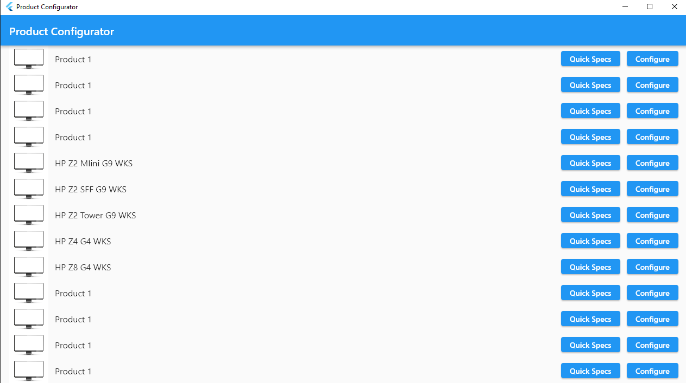
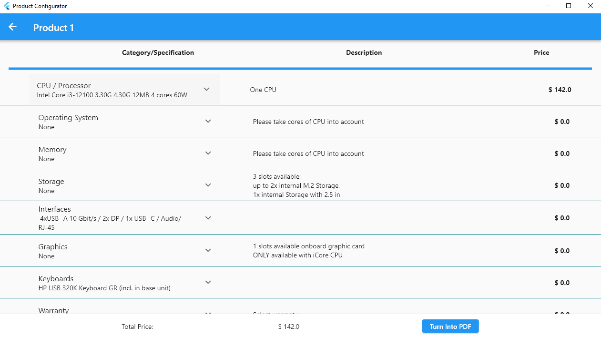
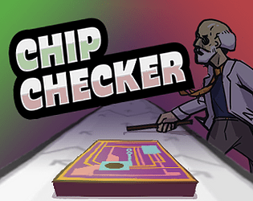
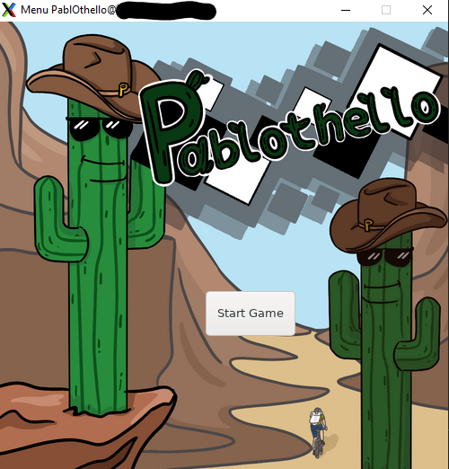
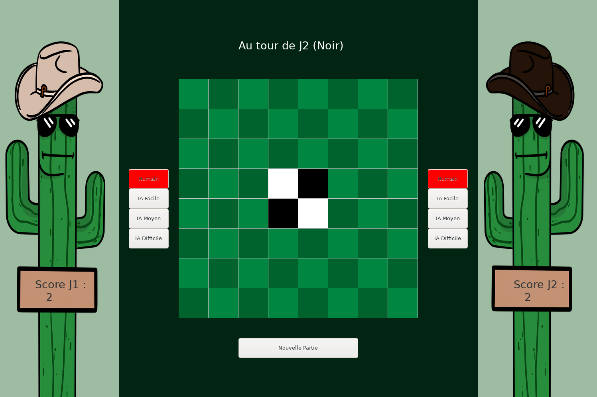
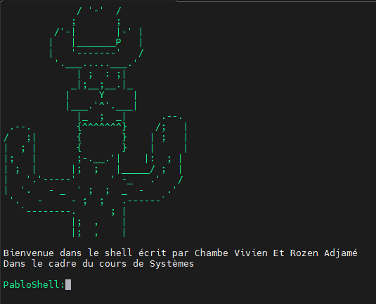
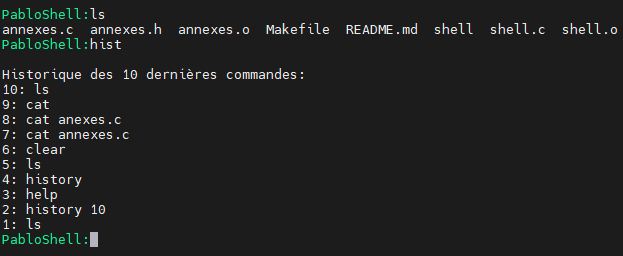
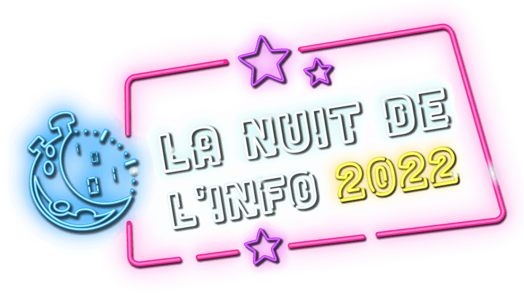
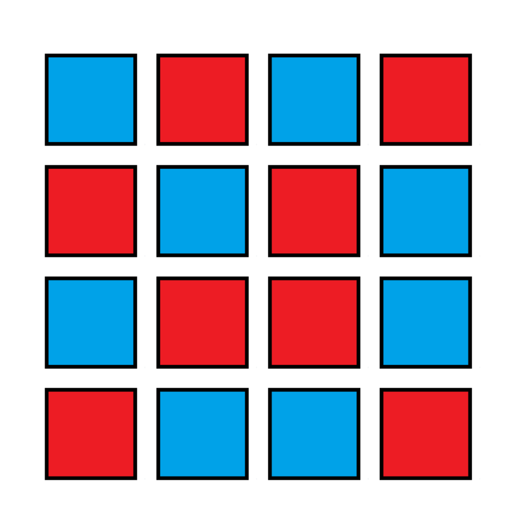

Mai 2023
Product Configurator


Lors de mon stage chez HPinc j'ai pu réaliser un configurateur pour une entreprise tierce
pour permettre aux clients de celle ci d'avoir une
idée du prix de leur produit acheté chez HP. Ce configurateur devait être disponible hors ligne et visait à remplacer un
fichier Excel. J'ai donc décidé de réaliser une application mobile en Flutter qui permettrait de réaliser
cette tâche. Cette application permet de choisir les différents composants du produit et de calculer le prix
total de celui-ci. Elle permet également de sauvegarder une configuration en pdf. Cette application est disponible
pour Android, iOS et Windows.
Avril 2023
Cell Segmentation & Tracking

Python

Le but de ce projet est d’implémenter un code pouvant, à partir d’images de microscopie de Live Cell
Imaging, retracer l’évolution des cellules dans le temps. On dispose d’images en 2D + T, c'est-à-dire
des images en 2D prises au cours du temps, il s’agirait donc de trouver la correspondance de chaque
cellule d’une image à l’autre et de tracer leur trajectoire. Pour en savoir plus retrouvez l'entiereté
projet sur Github
Mars 2023
Scientific Game Jam : Chip Checker

C++
Unreal Engine
J'ai participé à la Scientific Game Jam 2023 à Grenoble
pendant laquelle j'ai pu, avec une équipe constituée de 7 personnes, réaliser en 48h un jeu vidéo afin de
présenter et faire découvrir la thèse d'un enseignant chercheur, Olivier Occello. Vous pouvez retrouver le récapitulatif de
notre travail et tester le jeu sur la page Itchi.io
de celui-ci.
Mars 2023
PablOthello


C++

Projet réalisé en binôme lors de notre formation de programmation orientée objet. Le but était de programmer
un Othello, un jeu de plateau, en C++ en utilisant les notions de programmation orientée objet. Nous avons donc
réalisé un jeu en console avec un menu permettant de jouer contre un autre joueur ou contre une IA. Nous avons
ensuite réalisé une interface graphique avec la librairie WxWidgets. Vous pouvez retrouver le projet sur GitHub.
Février 2023
Mini Shell


C

Pour le cours de Système de ma formation j'ai réalisé un mini shell afin de me familiariser avec les *
concepts de processus et de système d'exploitation. Ce mini shell permet de lancer des commandes simples
comme ls, cd, pwd, etc... Vous pouvez retrouver le projet sur GitHub.
Décembre 2022
Nuit de l'info 2022

HTML
CSS
JS
Dans le cadre de la nuit de l'info 2022 nous avons dû réaliser en équipe un site internet afin de
faire de la prévention et de l'information sur le thème de la santé sexuelle. Pour cela nous avons eu
environ 12h (de 18h à 6h) pour réaliser ce site. Nous avons donc décidé de réaliser un site en HTML/CSS/JS et
de ne pas utiliser de framework afin de pouvoir réaliser les objectifs d'éco conception visant à réduire
l'impact environnemental du site. Nous avons donc réalisé un site simple et épuré avec un design minimaliste
que vous pouvez retrouver ici.
Novembre 2022
Application "Les Copaings"

Java
Flutter
Dart
Cette application regroupe plusieurs petits jeux de soirées allant du Picolo au Je n'ai jamais en passant par
l'Undercover. Originellement développée en Java, j'ai décidé de la refaire en Flutter pour pouvoir la
rendre cross-plateforme et ainsi la rendre disponible sur iOS et Android sans avoir à tout reprogrammer.
Mars 2022
Projet de Logique : Binairo

Python
Projet réalisé pour le cours de Logique de ma deuxième année de licence Maths et Informatique. Le but était
de créer un jeu de Takuzu/Binairo dont le but est de remplir la grille avec des 0 et des 1 en respectant les règles suivantes :
- Il ne peut pas y avoir plus de deux 0 ou deux 1 côte à côte
- Il doit y avoir le même nombre de 0 et de 1 sur chaque ligne/colonne
- Il ne doit pas y avoir 2 lignes ou colonnes identiques
Une fois l'interface graphique créée nous avons pu transformer une grille de Takuzu en formule logique et
utiliser un solveur SAT pour résoudre la grille. Dans notre cas nous avons utilisé Picosat.
Vous pouvez retrouver le projet sur GitHub.